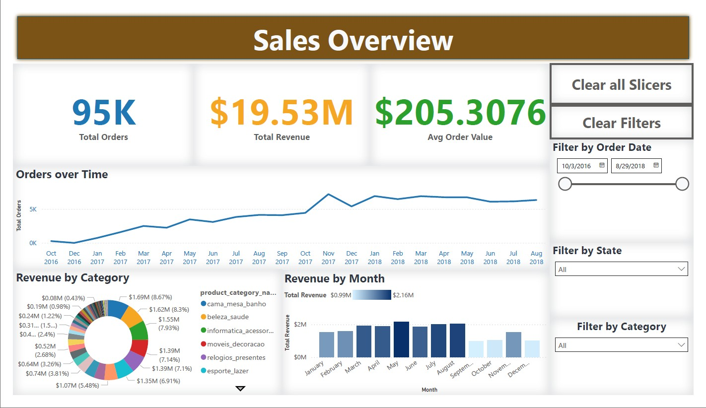

Database Schema
The schema below illustrates the relational structure of the e-commerce dataset:

An end-to-end data analysis project covering SQL, Python, and Power BI to derive actionable insights from raw e-commerce data.
This project demonstrates the complete data pipeline for analyzing e-commerce sales data. The workflow involved:
The final dashboard showcases KPIs such as total sales, top products, customer behavior, and order fulfillment trends.
The schema below illustrates the relational structure of the e-commerce dataset:
The interactive dashboard provides insights on sales trends, customer segmentation, and product performance. Below are preview images from the Power BI dashboard:


Explore the core project files used in this analysis:
This project highlights how raw e-commerce data can be transformed into meaningful insights using SQL, Python, and Power BI. By integrating multiple tools, we created a scalable workflow suitable for real-world business analysis. The structured approach ensured clean, reliable data and a professional interactive dashboard.